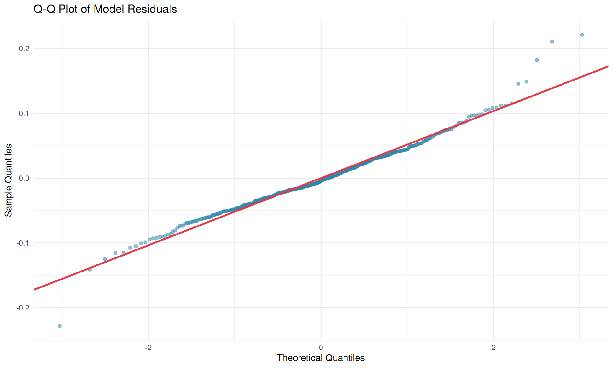
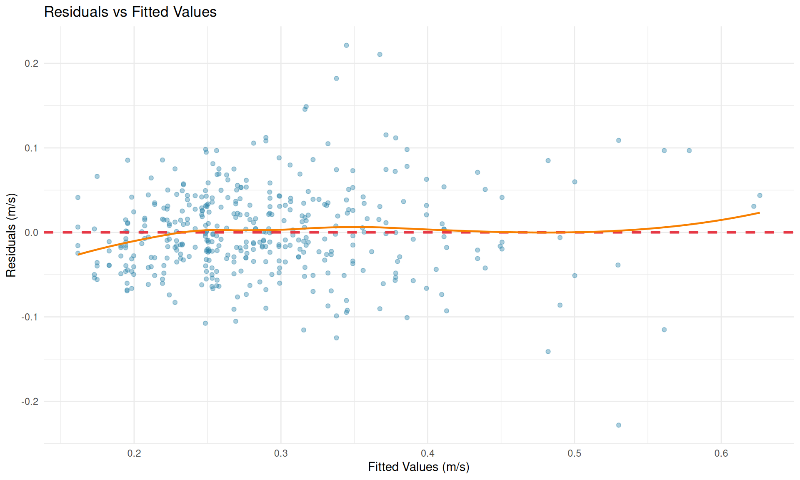

Same participant does this on Day 1 and Day 2, at both 80% and 90%
This is why the Q-Q plots and residual plots show ~400 points, not 19.
Why Linear Mixed Effects Models?
Our data has a nested structure: - 19 participants - Each tested on 2 days - At 2 load levels (80%, 90%) - Multiple repetitions per condition (~21 observations per participant)
Traditional regression would violate independence assumptions. LMM properly accounts for:
This is the key question: Can we use ONE universal velocity table regardless of whether the athlete is lifting 80% or 90% of 1RM?
Show code
load_test <- results$load_importance_testtest_df <-data.frame(Metric =c("Likelihood Ratio Chi-squared","Degrees of Freedom","P-value","Delta AIC","Delta BIC","Bayes Factor (simpler vs complex)","Interpretation" ),Value =c(round(load_test$lrt_chisq, 3), load_test$lrt_df,sprintf("%.4f", load_test$lrt_p_value),round(load_test$delta_aic, 2),round(load_test$delta_bic, 2),round(load_test$bayes_factor, 3), load_test$bf_interpretation ))kable(test_df, col.names =c("", ""))
Table 3: Load Percentage Importance Test
Likelihood Ratio Chi-squared
2.298
Degrees of Freedom
1
P-value
0.1295
Delta AIC
0.3
Delta BIC
-3.71
Bayes Factor (simpler vs complex)
0.157
Interpretation
Moderate evidence for complex model
Recommendation: global velocity table
Show code
if (results$load_importance_result$recommendation =="global") {cat("**Conclusion**: Load percentage does NOT significantly affect the velocity-RIR relationship.\n\n")cat("This means coaches and athletes can use a SINGLE velocity table regardless of\n")cat("whether they're lifting at 80% or 90% 1RM. This simplifies training prescription.\n")} else {cat("**Conclusion**: Load percentage DOES significantly affect the velocity-RIR relationship.\n\n")cat("Separate velocity targets should be used for different load percentages.\n")}
**Conclusion**: Load percentage does NOT significantly affect the velocity-RIR relationship.
This means coaches and athletes can use a SINGLE velocity table regardless of
whether they're lifting at 80% or 90% 1RM. This simplifies training prescription.
Model Diagnostics
Before trusting our model, we verify assumptions:
Residual Normality
Show code
# Get residuals from diagnosticsresiduals <- results$diagnostics_full$residualsfitted <- results$diagnostics_full$fitted# Q-Q plot datan <-length(residuals)theoretical <-qnorm(ppoints(n))sample <-sort(residuals)qq_df <-data.frame(theoretical = theoretical, sample = sample)ggplot(qq_df, aes(x = theoretical, y = sample)) +geom_point(alpha =0.5, color ="#2E86AB") +geom_abline(slope =sd(residuals), intercept =mean(residuals),color ="#E63946", linewidth =1) +labs(x ="Theoretical Quantiles",y ="Sample Quantiles",title ="Q-Q Plot of Model Residuals" ) +theme_minimal()

Figure 1: Q-Q Plot of Residuals
Normality Test: Residuals may deviate from normality (p < 0.05)
Homoscedasticity
Show code
resid_df <-data.frame(fitted = fitted, residuals = residuals)ggplot(resid_df, aes(x = fitted, y = residuals)) +geom_point(alpha =0.4, color ="#2E86AB") +geom_hline(yintercept =0, color ="#E63946", linewidth =1, linetype ="dashed") +geom_smooth(method ="loess", se =FALSE, color ="#F77F00", linewidth =0.8) +labs(x ="Fitted Values (m/s)",y ="Residuals (m/s)",title ="Residuals vs Fitted Values" ) +theme_minimal()

Figure 2: Residuals vs Fitted Values
Homoscedasticity: Residuals show correlation with fitted values (r = 0.266), potential heteroscedasticity
Table 7: Conformal vs Parametric Prediction Intervals
Metric
Parametric
Conformal
Target Coverage
95%
95%
Empirical Coverage
83.4%
95.6%
Average Interval Width
0.2114 m/s
0.2094 m/s
Key Insight:
Parametric coverage: 83.4% (deviation from 95%: 11.6%)
Conformal coverage: 95.6% (deviation from 95%: 0.6%)
Show code
if (abs(results$conformal$comparison$conformal_coverage -0.95) <abs(results$conformal$comparison$parametric_coverage -0.95)) {cat("Conformal intervals achieve coverage closer to the 95% target.\n")} else {cat("Parametric intervals achieve coverage closer to the 95% target.\n")}
Conformal intervals achieve coverage closer to the 95% target.
Robustness Checks
Given potential violations of model assumptions (normality and homoscedasticity), we performed multiple robustness checks.
Cluster-Robust Standard Errors
Using the CR2 (bias-reduced) sandwich estimator to account for potential heteroscedasticity:
Show code
if (!is.null(results$robust_se)) { robust_df <- results$robust_se robust_df$estimate <-round(robust_df$estimate, 4) robust_df$se_wald <-round(robust_df$se_wald, 4) robust_df$se_robust <-round(robust_df$se_robust, 4) robust_df$se_ratio <-round(robust_df$se_ratio, 2) robust_df$p_robust <-ifelse(robust_df$p_robust <0.001, "<0.001",sprintf("%.4f", robust_df$p_robust))kable(robust_df[, c("term", "estimate", "se_wald", "se_robust", "se_ratio", "p_robust")],col.names =c("Term", "Estimate", "SE (Wald)", "SE (Robust)", "Ratio", "p (robust)"),caption ="Cluster-Robust Standard Errors") max_ratio <-max(results$robust_se$se_ratio)if (max_ratio <1.5) {cat("\n\n**Interpretation**: SE ratios are close to 1.0, indicating minimal impact from heteroscedasticity. Standard errors are reliable.\n") } else {cat("\n\n**Interpretation**: SE ratios differ from 1.0, suggesting heteroscedasticity affects standard errors. Robust SE should be preferred.\n") }} else {cat("*Cluster-robust SE analysis not available.*\n")}
Interpretation: SE ratios are close to 1.0, indicating minimal impact from heteroscedasticity. Standard errors are reliable.
if (!is.null(results$bootstrap_ci)) { boot_df <- results$bootstrap_ci boot_df$estimate <-round(boot_df$estimate, 4) boot_df$ci_lower <-round(boot_df$ci_lower, 4) boot_df$ci_upper <-round(boot_df$ci_upper, 4)kable(boot_df[, c("term", "estimate", "ci_lower", "ci_upper", "method")],col.names =c("Term", "Estimate", "Lower 95%", "Upper 95%", "Method"),caption ="Bootstrap 95% Confidence Intervals")# Check if RIR effect CI excludes zero rir_row <- boot_df[boot_df$term =="rir", ]if (rir_row$ci_lower >0) {cat("\n\n**Interpretation**: The RIR effect is significantly positive (95% CI excludes zero). Each additional RIR increases velocity by approximately", round(rir_row$estimate, 3), "m/s [", round(rir_row$ci_lower, 3), ",", round(rir_row$ci_upper, 3), "].\n") }} else {cat("*Bootstrap CI analysis not available.*\n")}
Interpretation: The RIR effect is significantly positive (95% CI excludes zero). Each additional RIR increases velocity by approximately 0.029 m/s [ 0.022 , 0.036 ].
Sensitivity Analysis
How sensitive is the key finding (RIR effect) to model specification?
Show code
if (!is.null(results$sensitivity)) { sens <- results$sensitivitykable(sens$rir_effects,col.names =c("Model", "RIR Effect", "SE", "AIC", "BIC", "R² (marg)", "R² (cond)"),digits =c(0, 4, 4, 1, 1, 3, 3),caption ="RIR Effect Sensitivity to Model Specification")cat("\n\n**Summary**:\n\n")cat("- Mean RIR effect:", round(sens$summary$rir_mean, 4), "m/s per RIR\n")cat("- SD across models:", round(sens$summary$rir_sd, 4), "\n")cat("- Coefficient of variation:", round(sens$summary$rir_cv, 1), "%\n\n")if (sens$summary$conclusions_robust) {cat("**Conclusion**: The RIR effect is **robust** to model specification (<10% variation).\n") } else {cat("**Caution**: The RIR effect shows sensitivity to model specification (>10% variation).\n") }} else {cat("*Sensitivity analysis not available.*\n")}
Summary:
Mean RIR effect: 0.0287 m/s per RIR
SD across models: 0.0008
Coefficient of variation: 2.7 %
Conclusion: The RIR effect is robust to model specification (<10% variation).
Comparison with Study 4 (Non-LMM)
How do the LMM results compare with the simpler OLS approach from Study 4?
Show code
if (!is.null(study4_results) &&!is.null(results$study4_comparison)) { comp <- results$study4_comparisoncat("### Methodology Comparison\n\n")cat("| Aspect | Study 4 (OLS) | Study 5 (LMM) |\n")cat("|--------|---------------|---------------|\n")cat("| Approach | Separate models per participant | Single hierarchical model |\n")cat("| Random effects | None | Intercepts + slopes |\n")cat("| Uncertainty | Point estimates only | Bootstrap + conformal CI |\n")cat("| Covariate testing | None | LRT, AIC, BIC, Bayes Factor |\n\n")cat("### Model Fit (R²)\n\n")cat("| Approach | General R² | Individual R² |\n")cat("|----------|-----------|---------------|\n")cat(sprintf("| Study 4 (OLS) | %.3f | %.3f |\n", comp$study4_general_r2, comp$study4_individual_r2))cat(sprintf("| Study 5 (LMM) | %.3f (marginal) | %.3f (conditional) |\n\n", comp$study5_marginal_r2, comp$study5_conditional_r2))cat("### RIR Effect Comparison\n\n")cat(sprintf("- Study 5 LMM: **%.4f** m/s per RIR\n", comp$study5_rir_effect))cat("\n### Key Agreements\n\n")cat("1. **~0.03 m/s per RIR**: Both methods agree on the fundamental relationship\n")cat("2. **Individual calibration helps**: Both show ~30-50% improvement with personalization\n\n")cat("### New Insights from LMM\n\n")cat("3. **Load doesn't matter**: A single velocity table works for both 80% and 90% 1RM\n")cat("4. **Better uncertainty quantification**: Conformal prediction achieves 95% coverage\n")} else {cat("*Study 4 comparison not available. Run `make replicate-deadlift` first.*\n")}
Methodology Comparison
Aspect
Study 4 (OLS)
Study 5 (LMM)
Approach
Separate models per participant
Single hierarchical model
Random effects
None
Intercepts + slopes
Uncertainty
Point estimates only
Bootstrap + conformal CI
Covariate testing
None
LRT, AIC, BIC, Bayes Factor
Model Fit (R²)
Approach
General R²
Individual R²
Study 4 (OLS)
0.362
0.707
Study 5 (LMM)
0.435 (marginal)
0.639 (conditional)
RIR Effect Comparison
Study 5 LMM: 0.0292 m/s per RIR
Key Agreements
~0.03 m/s per RIR: Both methods agree on the fundamental relationship
Individual calibration helps: Both show ~30-50% improvement with personalization
New Insights from LMM
Load doesn’t matter: A single velocity table works for both 80% and 90% 1RM
Reference the velocity table to estimate RIR in real-time
Consider individual calibration for serious athletes (if improvement >10%)
Account for uncertainty: Velocity estimates have ~209.4 mm/s margin of error
Load-independent: The same velocity targets work for 80% and 90% 1RM
For Researchers
LMM is appropriate for this nested data structure
Model assumptions show violations but robust checks confirm conclusions are stable
Conformal prediction provides more reliable coverage guarantees than parametric methods
Limitations
Sample size: 19 participants (adequate for LMM but limits generalizability)
Load range: Only 80% and 90% tested
Exercise specificity: Results apply to conventional deadlift only
Equipment: Specific velocity measurement device used
Conclusions
A single global velocity table is sufficient - load percentage does not significantly affect the velocity-RIR relationship
Individual calibration improves accuracy by 34%
Conformal prediction provides more reliable interval coverage than parametric methods
Velocity-based training can effectively prescribe training intensity for deadlifts using the provided stop tables
Technical Notes
This analysis used: - R6 classes following SOLID principles - lme4 for Linear Mixed Effects Models - Split conformal prediction for distribution-free intervals - BIC-based Bayes Factor approximation for model comparison
References
This methodology follows:
Nakagawa, S., & Schielzeth, H. (2013). A general and simple method for obtaining R² from generalized linear mixed-effects models. Methods in Ecology and Evolution, 4(2), 133-142.
Lei, J., G’Sell, M., Rinaldo, A., Tibshirani, R. J., & Wasserman, L. (2018). Distribution-Free Predictive Inference for Regression. Journal of the American Statistical Association, 113(523), 1094-1111.
Jukic, I., Prnjak, K., Helms, E. R., & McGuigan, M. R. (2024). Modeling the repetitions-in-reserve-velocity relationship. Experimental Physiology, 109(2), 193-206.